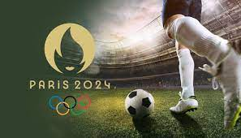

Football

Le football au Jeux olympiques est un evenement majeur dans le monde,voici quelques point a savoir:
Format de competion:
Traditionnellement le tournoi de football aux Jeux Olympiques se compose de tournois masculins et féminins.Les equipes nationaux qualifiées s'affrontent pour des match de groupe suivis d'eliminattion
directes jusqu'a lma finale pour determiner les médailles
Eligibilité des joueurs
contrairement a la Coupe du Monde seules les equipes nationales composées de joueurs de moins de 23 ans peuvent participer, les Jeux Olympiques imposent des restrictions différentes. Les équipes masculines peuvent comprendre des joueurs de moins de 23 ans, mais elles sont autorisées à inscrire jusqu'à trois joueurs de plus de 23 ans. Les équipes féminines n'ont pas de restrictions d'âge.
Impact social et culturel
Le football aux Jeux Olympiques ne se limite pas à la compétition sportive. Il représente également une occasion de célébrer la diversité culturelle et l'esprit de fair-play à travers le monde. De nombreux pays considèrent le succès olympique en football comme un honneur national.
quelle equipe participe au jeux olympique
Classement des equipes qui a remporte les Jo
Les meilleur joueurs des Jo